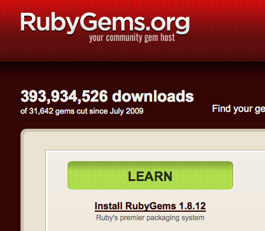
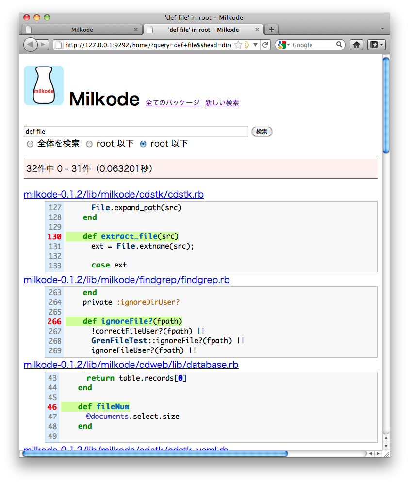
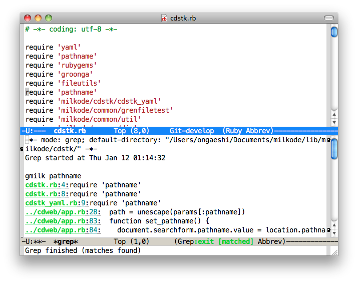

Rubyで作ったソースコード検索エンジン Milkode
ongaeshi
2012/7/29
ongaeshi
2012/7/29
$ gem install milkode

# Create default database $ milk init --default create : ~/.milkode/db/milkode.db created.
# Add /path/to/dir from local directory. $ milk add /path/to/dir package : dir add_record : /path/to/dir/a.rb add_record : /path/to/dir/b.rb add_record : /path/to/dir/README *milkode* : 1 packages, 3 records in ~/.milkode/db/milkode.db. # Add CRuby's source code from http. $ milk add http://ftp.ruby-lang.org/pub/ruby/1.9/ruby-1.9.2-p290.zip
# Move to the root of the CRuby's source code.
$ cd ~/.milkode/packages/zip/ruby-1.9.2-p180
# Where's the definition of the String class?
$ gmilk rb_define_class String
# Find from 3247 files ...
# Milkode you can find the line in 1 second.
ext/stringio/stringio.c:1387: VALUE StringIO = rb_define_class("StringIO", rb_cData);
ext/strscan/strscan.c:1251: StringScanner = rb_define_class("StringScanner", rb_cObject);
ext/strscan/strscan.c:1252: ScanError = rb_define_class_under(StringScanner, "Error", rb_eStandardError);
string.c:7448: rb_cString = rb_define_class("String", rb_cObject);
$ milk web

$ milk init # Init database $ milk add /path/to/foo # Add package
$ milk update # Update current dir's package $ milk update --all # Update all packages $ milk remove foo # Remove package $ milk rebuild # Rebuild database
$ milk list # List packages $ milk pwd # Disp current database $ milk setdb # Change default database $ milk --help # Help
$ gmilk -u new_word # With update
$ gmilk -s h ifndef RUBY_H # Suffix $ gmilk -f ChangeLog matz # File path $ gmilk -d ./test test_method # Start directory
$ gmilk -a engineyard # All packages $ gmilk -p jruby JRubyMethod printf # Specify package
; .emacs or .emacs.d/init.el (global-set-key "\M-g" 'grep) (setq grep-command "gmilk ") (setq grep-use-null-device nil) (global-set-key "\M-o" 'next-error)


| Name | ongaeshi (恩返し) |
| Web | http://milkode.ongaeshi.me |
| RubyGems | milkode |
| ongaeshi0621@gmail.com |